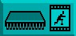
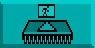
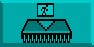
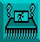

After experimenting with those options, the colours on your screen may be looking messy, and if this is so you should re-load the Objects in the following file:
"AMOSPro_Tutorial:Objects/Bobs.Abk"
We now move on to the second Major Option, so return to the Main Menu Screen by using the right mouse button to click the mouse pointer in the top line of icons, and select the Bank Operations icon.
Bank Operations

When this Major Option is selected, you take control of all aspects of the Object
bank. The Bank icon moves to the top left corner of the screen, and the Major
Options top line is replaced by a series of eight new Bank icons, as follows:
Get Object

First, highlight the Object you are interested in, by clicking the mouse pointer
over the appropriate image on the right-hand side of the screen. Now click on this
[Get Object] option, and the highlighted Object appears in the large Zoom
Window and the smaller Edit Window, ready to be worked on.
It is highly probable that you are impatient to change the appearance of whatever image you have selected, and there is no harm in experimenting. Please be patient and work through this Chapter step by step, because there is much more enjoyment to be had in knowing what you are doing. For the time being, try clicking on the small icon that shows a pair of arrows pointing up and down, in the line of drawing tools. This will turn the current Object upside down. Leave it like that, and continue with the next option.
Put Object

Once the appearance of the edited Object has been changed by flipping it on its
head, this option is used to put the Object back into its memory bank. It will go
back to its original location in the bank, if that location has been defined.
You can see this original location by looking for the Object with the highlighted identification number, marked with an asterisk (*).
Put Object To

You can select a new Object to highlight simply by clicking on its image. Use this option
if you want to force the edited Object into the location that is currently highlighted in
the bank, and replace whatever is there. You will be asked to confirm your actions, just
to make sure.
Insert Object
This is a fast method of inserting an Object from the editing windows straight into the highlighted position in the bank, without replacing the Object that is already sitting in that position. The other Objects in the bank will then shunt along to make room for it.